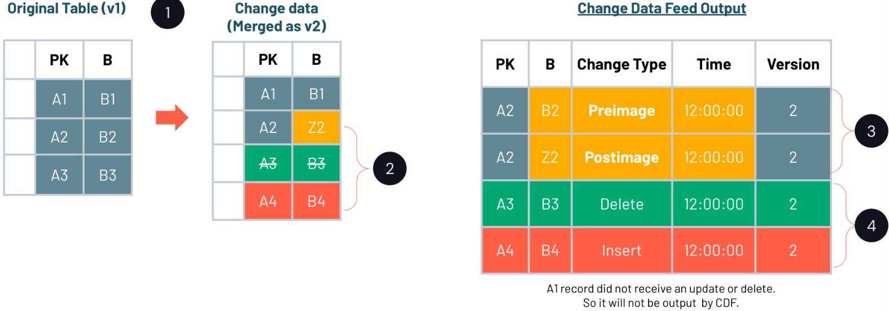

Section 7 · Governance and Security · Quelle: Kurs 6, DP 1.3 & DP 1.4L
Structured Streaming geht grundsätzlich davon aus, dass Quelltabellen nur angehängt (append-only) werden – Updates und Deletes an bereits gelesenen Daten passen nicht in dieses Modell. Genau hier setzt Change Data Feed (CDF) an: CDF verfolgt Zeilen-Änderungen zwischen Versionen einer Delta-Tabelle und macht Inserts, Updates und Deletes als eigenen, inkrementell lesbaren Datenstrom verfügbar. Für Datenschutz-Anwendungsfälle ist das unverzichtbar – insbesondere um Löschanfragen ("Recht auf Vergessenwerden") zuverlässig von einer Quelltabelle in alle nachgelagerten Tabellen zu propagieren.
CDF ist standardmäßig nicht aktiviert und muss explizit eingeschaltet werden – entweder für einzelne Tabellen per ALTER TABLE oder global für alle künftig neu erstellten Tabellen.
-- Fuer eine bestehende Tabelle aktivieren ALTER TABLE silver_users SET TBLPROPERTIES (delta.enableChangeDataFeed = true); -- Aktivierung pruefen DESCRIBE TABLE EXTENDED silver_users; -- ... [delta.enableChangeDataFeed=true] sollte unter Table Properties erscheinen
# Global fuer alle neuen Tabellen der Session aktivieren
spark.conf.set("spark.databricks.delta.properties.defaults.enableChangeDataFeed", True)
Sobald CDF aktiv ist, enthält jede Abfrage der Änderungshistorie drei zusätzliche Metadatenspalten:
| Spalte | Typ | Bedeutung |
|---|---|---|
_change_type | String | insert, delete, update_preimage, update_postimage |
_commit_version | Long | Delta-Log-Version, in der die Änderung committet wurde |
_commit_timestamp | Timestamp | Zeitpunkt des Commits |
Bei Updates erscheinen für jede geänderte Zeile zwei Einträge: update_preimage zeigt den Zustand vor, update_postimage den Zustand nach der Änderung.

Es gibt zwei Wege, CDF zu konsumieren. Für kontinuierliche Verarbeitung eignet sich ein Stream mit der Option readChangeFeed und startingVersion:
cdf_df = (spark.read
.format("delta")
.option("readChangeFeed", "true")
.option("startingVersion", 2) # ab welcher Version gelesen werden soll
.table("silver_users"))
display(cdf_df)
Für punktuelle Batch-Abfragen – etwa "was hat sich seit dem letzten Lauf geändert?" – eignet sich die SQL-Tabellenfunktion table_changes(table_str, start [, end]), die einen Ausschnitt der Änderungshistorie als normale Tabelle zurückgibt:
-- Alle in der letzten Version eingefuegten Zeilen
SELECT *
FROM table_changes("silver_users", latest_version)
WHERE _change_type = "insert"
ORDER BY _commit_version;
-- Alle geloeschten Zeilen seit Version 4
SELECT *
FROM table_changes("silver_users", 4)
WHERE _change_type = "delete";
Löschanfragen werden aus gutem Grund meist nicht in der regulären ETL-Pipeline mitverarbeitet, sondern in einem eigenen, auditierbaren Prozess. Ein typisches Muster: Eine Compliance-Tabelle delete_requests hält offene Löschanfragen mit Frist (deadline) und Status fest. Nach dem eigentlichen DELETE auf der Quelltabelle wird der Change Data Feed genutzt, um exakt dieselben Datensätze automatisiert in alle nachgelagerten (Gold-)Tabellen zu propagieren:
-- 1. Loeschung auf der Quelltabelle ausfuehren DELETE FROM silver_users WHERE mrn IN (SELECT mrn FROM delete_requests); -- Delta erzeugt eine neue Tabellenversion mit Operation "DELETE"
# 2. CDF-Stream ab der Delete-Version inkrementell lesen
deleteDF = (spark.readStream
.format("delta")
.option("readChangeFeed", "true")
.option("startingVersion", 4) # Version des DELETE-Commits
.table("silver_users"))
# 3. Fuer jeden Mikro-Batch: Loeschung in die Gold-Tabelle propagieren
# und den Anfrage-Status als "erledigt" markieren
def process_deletes(microBatchDF, batchId):
microBatchDF.createOrReplaceTempView("deletes")
spark.sql("""
MERGE INTO gold_users u
USING deletes d
ON u.mrn = d.mrn
WHEN MATCHED
THEN DELETE
""")
spark.sql("""
MERGE INTO delete_requests dr
USING deletes d
ON d.mrn = dr.mrn
WHEN MATCHED
THEN UPDATE SET status = "deleted"
""")
query = (deleteDF.writeStream
.foreachBatch(process_deletes)
.outputMode("update")
.option("checkpointLocation", f"{checkpoint_path}/deletes")
.trigger(availableNow=True)
.start())
query.awaitTermination()
Der Clou an diesem Muster: Die mrn-Spalte (natürlicher Schlüssel bzw. Pseudonym) verbindet die Löschanfrage über den CDF-Stream mit beliebig vielen nachgelagerten Tabellen – das Prinzip lässt sich problemlos auf zusätzliche Ziel-Tabellen ausweiten, indem die process_deletes-Funktion um weitere MERGE INTO-Statements ergänzt wird. Delta Lake erlaubt zudem, jedem Commit eine frei wählbare Commit-Message mitzugeben (z. B. über die Option userMetadata beim Schreiben), was den gesamten Löschvorgang zusätzlich in der Tabellenhistorie auditierbar macht.
Ein wichtiger Vorbehalt: Nach diesem Vorgang ist die Löschung zwar in der aktuellen Tabellenversion vollzogen, ältere Versionen der Tabelle (Time Travel) und die CDF-Historie enthalten die gelöschten Zeilen aber weiterhin. Wie diese Daten auch physisch entfernt werden, behandelt Kapitel 05-5 zu VACUUM.
table_changes gibt alle Spalten der Ausgangstabelle zurück, ergänzt um die Commit-Version und den Commit-Zeitstempel der jeweiligen Änderung. Neben dem hier gezeigten Compliance-Anwendungsfall wird die Funktion offiziell auch für inkrementelle ETL-Pipelines empfohlen, die nur seit dem letzten Lauf geänderte Zeilen weiterverarbeiten sollen, für Audit-Trails zur Nachverfolgung von Datenänderungen sowie für Datenreplikations-Workloads, die Änderungen an nachgelagerte Systeme, Caches oder externe Ziele synchronisieren.